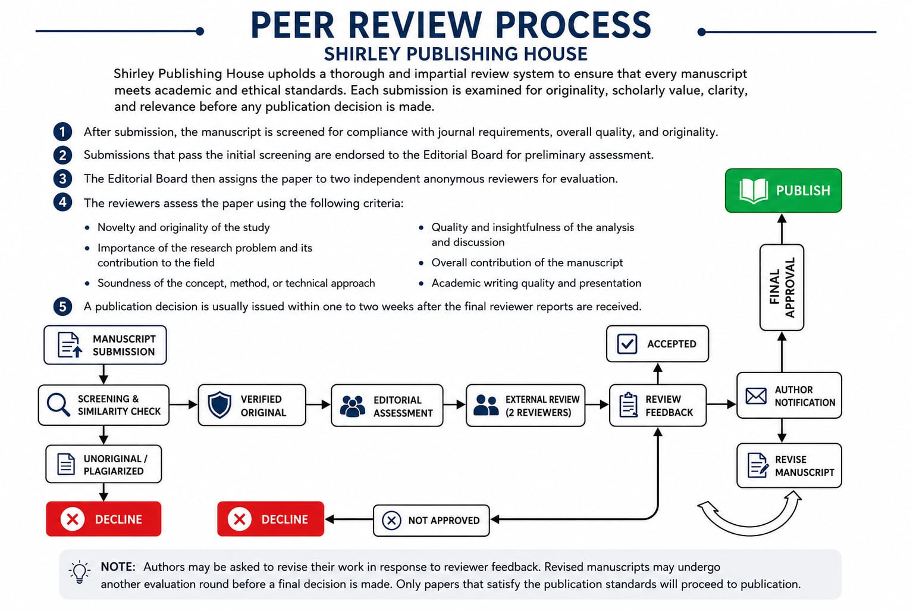

Complete Manuscript
Submit a readable document with all chapters, sections, tables, figures, references, and appendices needed for assessment.
Author resources
Use these general guidelines before submitting. Final requirements may vary depending on the publication type, discipline, and services requested.
Submission checklist
Submit a readable document with all chapters, sections, tables, figures, references, and appendices needed for assessment.
Provide the full names, affiliations, email addresses, and preferred author order for all contributors.
Identify whether the work is a book, journal article, poem, thesis-derived article, module, or another publication.
State the desired size, binding, number of copies, color requirements, and target date when printing is needed.
Confirm that the work is original, properly cites sources, and does not violate another person’s copyright.
Secure permission to reproduce copyrighted photographs, illustrations, tables, or extensive excerpts.
Editorial workflow
See how submitted manuscripts are screened, evaluated, revised, approved, and prepared for publication.

Send the basic publication details now. You may attach the manuscript when your email application opens.